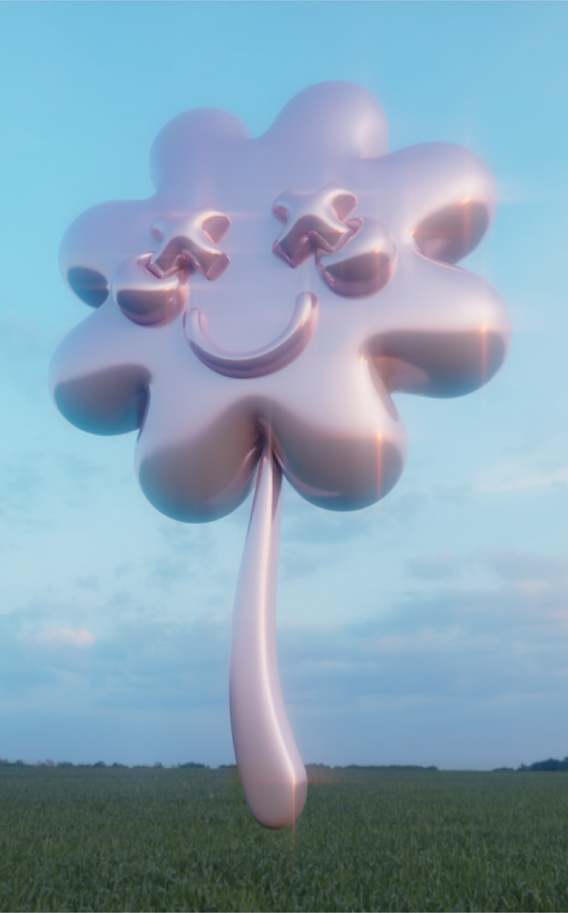
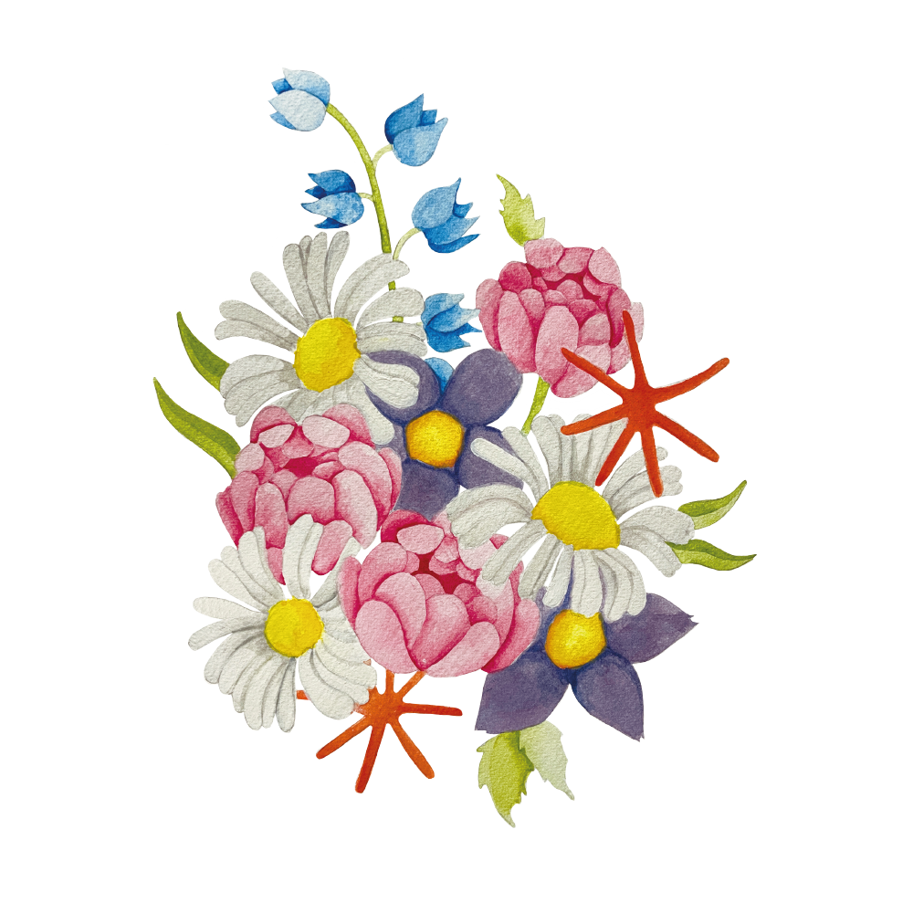
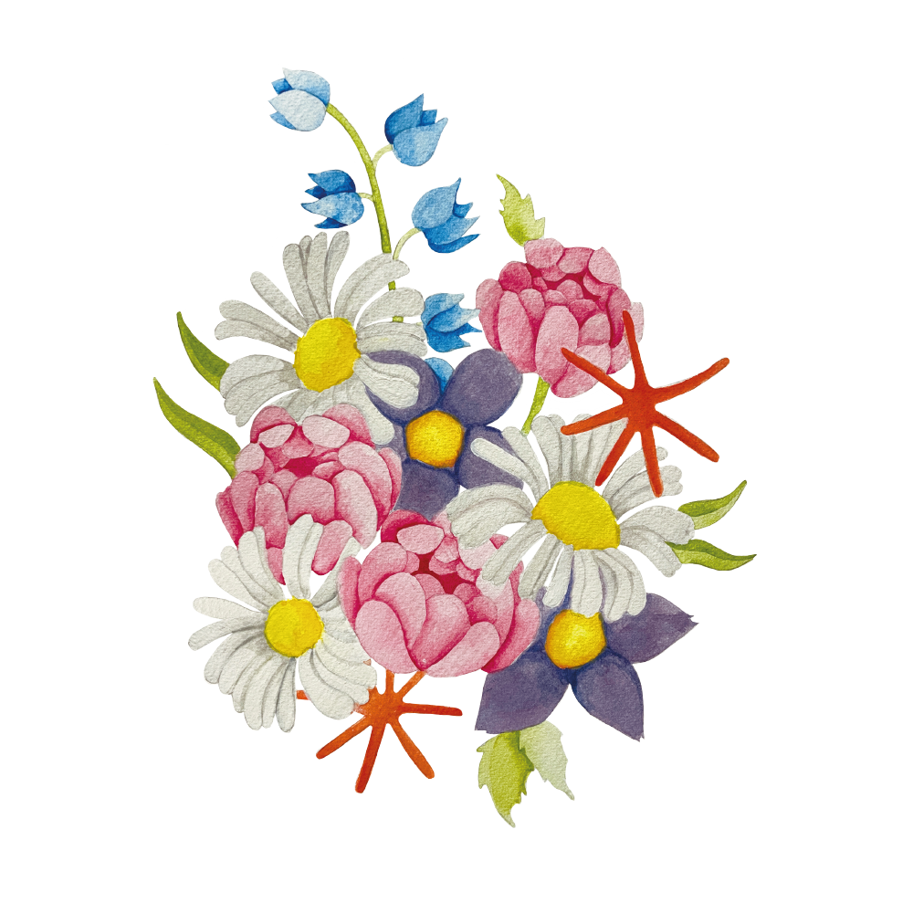

Sobre mi
¡Hola! Soy María, una diseñadora multidisciplinaria apasionada por la creatividad y la innovación. Mi enfoque versátil abarca diversas áreas del diseño, fusionando estilos y técnicas para crear soluciones únicas.


En mi portafolio, encontrarás ejemplos que reflejan mi capacidad para abordar proyectos desde diferentes perspectivas y disciplinas. Estoy emocionada por la oportunidad de colaborar en proyectos inspiradores. ¡Gracias por visitar mi portafolio!
 
